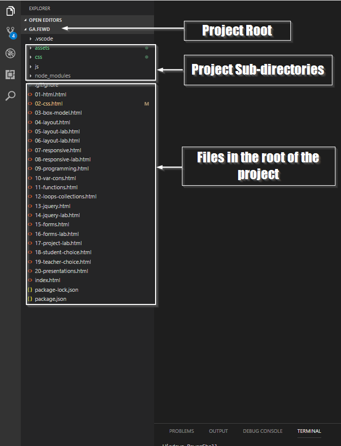
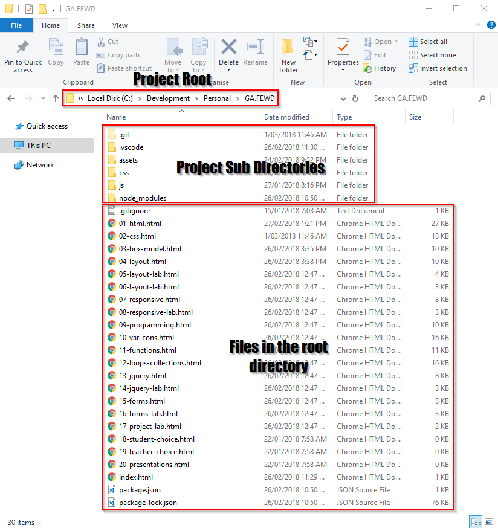

Class 2: CSS Basics
Evan Wallace
Senior Software Developer - Berkley Insurance Australia
Learning Objectives
- Apply and explain CSS “cascade” including: importance, specificity and inheritance
- Describe the DOM and draw simple DOM tree
- Predict image paths and apply relative paths to img and a tags
Agenda
- Review HTML + CSS Syntax and the DOM
- Explore the img element and image types
- Explore the anchor tag
- Practice relative and absolute paths
- Deep dive into CSS
- Lab time
Project
- Start thinking about your project now
- Have a chat with me in class or via slack so we dont take on too big a project
- Short list some of your favourite websites for inspiration
- I love using pintrest to help inspire me for my web projects
Wireframing
- Think about the content of your site
- Plan the layout (we will cover different layouts in coming weeks)
- Think about what information you want to share with your audience
Review HTML + CSS and the DOM
Review Questions
- Are HTML Tags upper or lower case?
- Which element in the DOM is visible to users?
- Which element do we use to link external CSS?
HTML review
- HTML page is made up of elements
- Element must have an opening tag
- An Element may have 0 or many attributes
- An attribute may have 0 or 1 value
- An element may have content
- If an element has content, it must have a closing tag
CSS review
- Series of rules that apply styles to html elements
- Each rule is made up of declarations
- Declarations are made up of properties and values
DOM review
- DOCTYPE tag
- html element
- head element
- body element
DOM - Document Object Model

Absolute and Relative Paths
Some Terminology
- Root - The top level folder of the computer (usually c:/ for PC and Username for Macs)
- Project Root - The top level folder for a website / web application
- Subdirectories - All folders under the root directory
VS Code view of a project

Windows explorer view of a project

Absolute path
- Similar to a full Physical Address e.g 1 Market Street, Sydney, NSW 2000, Australia
- Can find a file from any starting location
- Useful if storing assets outside of the project
- I've had issues deleting files without realising projects were using them
- Used when linking to other websites
Absolute path Examples

Relative Path
- Uses directions from your current location to the target
- e.g Starting from Town Hall station, Walk down George St, Turn left of Market and enter the 5th building
- Useful when bundling images and assets within the project
- The syntax is a little harder to use
- Should try to use this method as often as possible
Image element

src attribute
Tells the browser where to find the image

Image Types - PNG
- Supports transparency and semi transparency
- Great for logos, icons and repeating backgrounds
- Not great at for large images
Image Types - JPG
- Does not support transparency
- Has great compression characteristics
- Great for large images
- Can work with logos but will look less crisp on inspection
Image Types - GIF
- Supports basic transparency
- Supports animations
- Has limited colours available
Image Types - SVG
- My personal favourite lately
- Works with vectors instead of raster images
- Infinitely Scalable
- Very small file sizes
- Great for logos, icons and repeating backgrounds
- Only uses basic shapes so will not be photograph quality
anchor element

Code along: Paths, Anchors and Images
Schoology - labs
Hex colours

Key word colours

RGB colours

RGBa colours

Element selectors

ID & Class selectors

Contextual

Why its called cascading?
More than one rule may apply to an element. Therefore there needs to be a way to determine which rule takes
priority
Each rule is given an specificity number and the rule with the highest specificity is chosen
If two rules have the same specificity, the rule declared last is used
Calculating Specificity
3 factors are used to calculate specificity
- id - worth the most points
- class - Middle of the pack
- element - worth the least points
Specificity Example
/*
# of Ids - 0
# of Classes - 1
# of Elements - 1
Specificity = 0 - 1 - 1
*/
a.navigation { font-size: 40px; }
/*
# of Ids - 0
# of Classes - 2
# of Elements - 1
Specificity = 0 - 2 - 1
*/
a.navigation.side-nav { font-size: 40px; }
Specificity Example Cont.
/*
# of Ids - 1
# of Classes - 1
# of Elements - 1
Specificity = 1 - 1 - 1
*/
a.nav#home { font-size: 40px; }
/*
# of Ids - 0
# of Classes - 12
# of Elements - 1
Specificity = 0 - 12 - 1
*/
a.nav.nav.nav.nav.nav.nav.nav.nav.nav.nav.nav.nav
{ font-size: 40px; }
Code Along: CSS Specificity
www.codepen.io/evkw - CSS Specificity
What we covered today
- Different types of pathing
- Image elements and image types
- Anchor elements
- CSS Colours
- CSS Selectors
- CSS inheritance
- CSS Specificity
- Practiced selecting elements with CSS
Outside of class
- Finish off CSS Diner
- Start working on your project
- Have a look through
learn layout - We will go through all this material in the coming weeks
- Optional - Try to go through this
Chrome dev tools tutorial it is an invaluable resource!